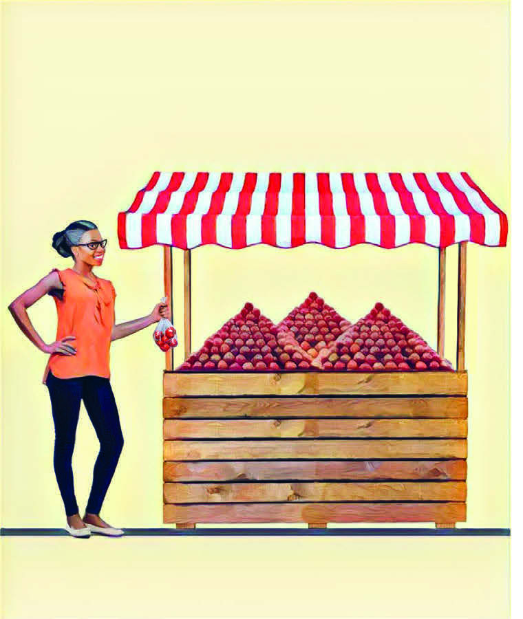
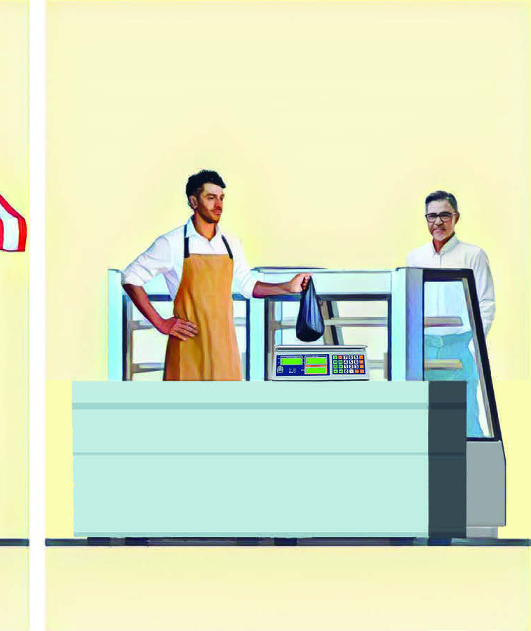

MEDIDAS DE MASSA
EM NOSSO DIA A DIA, GERALMENTE USAMOS O QUILOGRAMA E O GRAMA PARA MEDIR A MASSA DE UM OBJETO.
NOSSAS EXPERIÊNCIAS DE VIDA NOS AJUDAM A ESTIMAR UMA MEDIDA.

JÁ DEVE TER 1 QUILOGRAMA.

PRECISO DE MEIO QUILOGRAMA DE CARNE MOÍDA.
512g
sou
Valéria Rezende
PENSE EM ALGUMAS SITUAÇÕES DO COTIDIANO EM QUE VOCÊ PRECISOU FAZER O MESMO.
ALGUMAS VEZES, PRECISAMOS COMPARAR PRODUTOS CUJA MASSA ESTÁ MARCADA EM GRAMAS (g) NA ETIQUETA; OUTRAS, ELA ESTÁ EM QUILOGRAMAS (kg).
LEMBRE-SE DE QUE:
1\ \text{QUILOGRAMA EQUIVALE A}\ 1\ 000\ \text{GRAMAS}
TODOS OS PRODUTOS A SEGUIR TÊM 1 QUILOGRAMA DE MASSA.
SABÃO EM PÓ
1 kg
CAFÉ
ALGODÃO
1 kg
OBSERVE QUE AVALIAR APENAS O TAMANHO DE CADA EMBALAGEM NEM SEMPRE NOS AUXILIA A SABER QUAL É A MASSA DE CADA PRODUTO.
POR ESSA RAZÃO, É IMPORTANTE LER OS RÓTULOS.
SUGESTÃO PARA O PROFESSOR
Sugerimos ler o livro de Silva, Qual a medida do Rei?: Grandezas e Medidas nos Anos Iniciais (2022).
Esse livro é fruto de uma investigação rela-cionada ao tema Grandezas e Medidas: comprimento, massa e capacidade realizada no chão da sala de aula com estudantes de 4º ano do Ensino Fundamental, participativos, curiosos e ativos no aprender e ensinar Ma-temática, em uma escola pública de Brasília, DF.